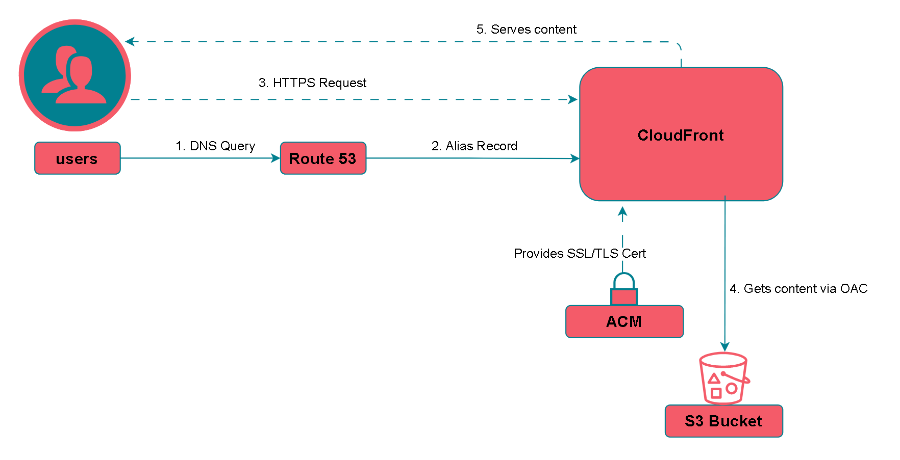
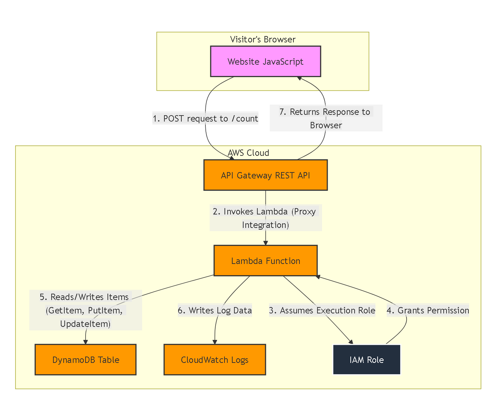

Cloud-Native Portfolio on AWS
A comprehensive demonstration of modern cloud engineering and DevOps practices.
Project Philosophy & Goal
The primary objective was not just to build a website, but to architect, deploy, and automate a complete full-stack serverless application on AWS. This project serves as a tangible portfolio of skills in cloud infrastructure, security, automation, and CI/CD, mirroring the standards and best practices of a professional enterprise environment.
Key Achievements
Security-First Design
Implemented a secure, private-by-default architecture using a private S3 bucket, CloudFront OAC, and the Principle of Least Privilege for all IAM roles.
Fully Serverless Architecture
Built a cost-effective and highly scalable application using AWS Lambda for compute, DynamoDB for data, and API Gateway for the API layer, eliminating all server management.
100% Infrastructure as Code (IaC)
Defined the entire frontend and backend infrastructure declaratively in Terraform, enabling repeatable, version-controlled, and error-free deployments.
Automated CI/CD Pipelines
Created "push-to-deploy" workflows with GitHub Actions, incorporating automated testing, security scanning, and seamless deployments for both infrastructure and application code.
Technology Stack
Frontend
- Amazon S3
- CloudFront (CDN)
- Route 53 (DNS)
- ACM (SSL Certificates)
- HTML5 & CSS3
- JavaScript (Fetch API)
Backend
- AWS Lambda (Python 3.9)
- Amazon DynamoDB
- Amazon API Gateway
- IAM (Roles & Policies)
- Boto3 SDK
DevOps & Automation
- Terraform (IaC)
- GitHub Actions (CI/CD)
- Git & GitHub
- AWS CLI
- OIDC Authentication
- tfsec Security Scanner
Solution Architecture
The application is split into two distinct layers: a global delivery network for the frontend and a regional serverless stack for the backend API.
Frontend Architecture
The delivery layer, responsible for getting the website to the user quickly and securely.

Backend Architecture
The application logic layer, responsible for processing data and managing state.

Technical Deep Dive
The Frontend (Delivery Layer)
The frontend infrastructure is designed for high performance, security, and low cost by offloading all traffic to the AWS global edge network.
- Private S3 Bucket: Stores all static assets (HTML, CSS, JS) in a secure, non-public bucket, enforcing a security-first posture.
- CloudFront CDN: Acts as the public entry point, caching content globally for low-latency delivery. It's configured to redirect all HTTP traffic to HTTPS for end-to-end encryption.
- Origin Access Control (OAC): Establishes a secure connection, ensuring that the S3 bucket can only be accessed by my specific CloudFront distribution, preventing direct access to the origin.
- ACM & Route 53: A free, auto-renewing SSL certificate from ACM is attached to CloudFront, and Route 53 Alias records provide a reliable DNS pointer from my custom domain to the CDN.
The Backend API (Application Logic)
The backend is an intelligent unique visitor counter, not a simple hit counter, showcasing a deeper understanding of serverless patterns and data privacy.
- AWS Lambda (Python): The core logic resides in a serverless function. It pseudonymizes visitor IP addresses using a salted hash (HMAC-SHA256) to protect privacy, with the secret key securely managed via Lambda environment variables.
- DynamoDB NoSQL Database: Utilizes a single-table design for maximum efficiency. One item holds the aggregate visitor count, while other items store visitor IP hashes. This allows for a fast, cost-effective `GetItem` check to determine if a visitor is new before atomically incrementing the counter with an `UpdateItem` operation, which prevents race conditions.
- API Gateway: Provides a secure REST API endpoint. A Lambda Proxy Integration passes request details (like the source IP) to the function. CORS is meticulously configured to allow secure cross-origin requests from the frontend domain.
The Automation Layer (Infrastructure as Code)
The entire project is defined declaratively using Terraform, eliminating manual configuration and ensuring the infrastructure is consistent, repeatable, and version-controlled.
- Terraform State Management: A remote S3 backend is used to securely store the Terraform state, a critical practice for team collaboration and CI/CD automation.
- Modular Design: The infrastructure is organized into two distinct Terraform projects (`frontend` and `backend`), simplifying management and allowing for independent updates.
- Problem Solving: The automation process involved solving real-world challenges, such as debugging S3's modern `BucketOwnerEnforced` setting versus legacy ACLs and using Terraform's implicit dependency graph to resolve circular dependencies between CloudFront and S3.
The Deployment Engine (CI/CD Pipeline)
Complete "push-to-deploy" CI/CD pipelines were built with GitHub Actions, fully automating the testing and deployment of both the frontend and backend repositories.
- Secure Authentication: The pipelines use a modern, passwordless OIDC connection to securely authenticate with AWS, eliminating the need to store long-lived access keys as GitHub secrets.
- Backend Pipeline: The workflow enforces quality through automated gates. It first runs Python unit tests and a `tfsec` static analysis scan to catch security misconfigurations. Only after all checks pass does it proceed to `terraform apply` the infrastructure changes.
- Frontend Pipeline: This multi-stage process first deploys infrastructure with `terraform apply`. Then, using Terraform `outputs`, it dynamically runs two critical post-deployment steps:
- An `aws s3 sync` command uploads website files, ensuring the bucket is a perfect mirror of the Git repository.
- An `aws cloudfront create-invalidation` command purges the global CDN cache, making new changes live for all users almost instantly.